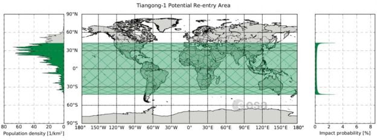

မြေပြင်ကနေ ထိန်းချုပ်နိုင်စွမ်း မရှိတော့ပြီဖြစ်လို့ ဒီအာကသစခန်းယဉ် ဘယ်အချိန်၊ ဘယ်နေရာမှာ ပျက်ကျမလဲဆိုတာ ဘယ်သူမှ မပြောနိုင်ပါဘူး။ ဒါပေမယ့် ဒီအာကသစခန်းဟာ မတ်လ ၃၀ ရက်နဲ့ အေပြီလ ၂ ရက်နေ့ အကြားမှာ ကမ္ဘာပေါ်ကို ပျက်ကျလိမ့်မယ်လို့ ခန့်မှန်းပါတယ်။ အာကသ စခန်းယဉ်ရဲ့ အစိတ်အပိုင်း အများစုကတော့ ကမ္ဘာ့လေထုထဲကို ပြန်ဝင်ရောက်ချိန်မှာ မီးလောင်ပျက်စီးသွားမှာ ဖြစ်ပါတယ်။ ဒါပေမယ့် အစိတ်အပိုင်း အချို့ကတော့ ပျက်စီးသွားခြင်း မရှိပဲ ကမ္ဘာပေါ်ကို ပျက်ကျနိုင်ပါတယ်။
ဘယ်မှာ ပျက်ကျမှာလဲ
၂၀၁၆ ခုနှစ်ကတဲက ဒီအာကသစခန်းနဲ့ အဆက်အသွယ်အားလုံး ပြတ်တောက်သွားပြီ ဖြစ်တာမို့ ဘယ်နေရာမှာ ပျက်ကျမလဲဆိုတာ ဘယ်သူမှ မမှန်းဆနိုင်ပါဘူး။ ဥရောပအာကသ အေဂျင်စီကတော့ ဒီစခန်းဟာ မြောက်လတ္တီတွတ် ၄၃ ဒီဂရီနဲ့ တောင်လတ္တီတွတ် ၄၃ ဒီဂရီအကြား တနေရာရာမှာ ပျက်ကျနိုင်တယ်လို့ ခန့်မှန်းထားပါတယ်။ ဒါဟာ အီကွေတာရဲ့ တောက်နဲ့ မြောက်က လူနေထူထပ်တဲ့ အရပ်ဒေသတွေ အများအပြား ပါဝင်နေပါတယ်။ မြန်မာနိုင်ငံဟာလဲ ဒီပျက်ကျနိုင်တဲ့ ဇုန်ထဲမှာ ရှိနေပါတယ်။ ပျက်ကျမယ့်ရက်ကို မတ် ၃၀ နဲ့ ဧပြီ ၂ ရက်အကြားလို့ ခန့်မှန်းပေမယ့် အတိအကျတော့ မပြောနိုင်ဘူးလို့လဲ ဆိုပါတယ်။
ဘယ်လိုပျက်ကျမှာလဲ
ဒီစခန်းဟာ အခုအခါမှာ တဖြည်းဖြည်းချင်း ကမ္ဘာပေါ်ကို နိမ့်ဆင်းလို့ လာနေပါပြီ။ တဖြည်ဖြည်းနဲ့ ကမ္ဘာ့လေထုထဲ ပြန်ဝင်လာတာနဲ့ အမျှ နိမ့်ဆင်းလာတဲ့ အရှိန်လဲ ပိုပြီးမြန်လာပါလိမ့်မယ်။ ကမ္ဘာ့မျက်နှာပြင်ကနေ ကီလိုမီတာ ၁၀၀ လောက် ရောက်တဲ့အခါမှာတော့ အာကသယဉ်နဲ့ ကမ္ဘာ့လေထု ပွတ်တိုက်အားကြောင့် ပူပြီး မီလောက်ကျွမ်း လာပါလိမ့်မယ်။ အာကသယာဉ်ရဲ့ အစိတ်အပိုင်း အတော်များများကတော့ ဒီမီးကြောင့် ပျက်စီးသွားပါလိမ့်မယ်။ ဒါပေမယ့် ဘယ်အစိတ်အပိုင်းတွေ ကျန်မလဲ၊ ဘယ်လောက် ကျန်မလဲ ဆိုတောကတော့ မပြောနိုင်ပါဘူး။ အထူးသဖြင့် တရုတ်က အာကသယာဉ်ကို ဘာပစ္စည်းတွေနဲ့ တည်ဆောက်ထားသလဲ ဆိုတာကို ထုတ်ဖေါ်ပြောဆိုခြင်း မရှိတဲ့အတွက် ဘယ်အပိုင်းတွေက မီးမလောက်ပဲ ကျန်းခဲ့မလဲဆိုတာ မပြော်နိုင်ပါဘူး။ ဒီမီးအလောင်တဲ့ အပိုင်းတွေဟာ ကမ္ဘာပေါ်ကို ကျရောက်ပြီး မြေပြင်က ပစ္စည်းတွေကို ထိခိုက်ပျက်စီး စေနိုင်ပါတယ်။ အကယ်လို ပျက်ကျချိန်ဟာ ညအချိန်မှာဆိုရင် ကောင်းကင်မှာ ကြယ်ကြွေသလိုမျိုး မြင်ရမှာ ဖြစ်ပါတယ်။ဒါဆိုကျွန်တော်တို့အပေါ် ပျက်ကျရင် ဘယ်လိုလုပ်မလဲ
စိတ်မပူပါနဲ့။ ဒီအာကသယာဉ်ရဲ့ အစိတ်အပိုင်း အများစုဟာ မီးလောင်ပျက်စီးသွားမှာ ဖြစ်ပါတယ်။ အင်ဂျင်နဲ့ လောင်စာဆီတိုင်ကီတွေကတော့ မီးလောင်တဲ့ဒါဏ်ကို ခံနိုင်ပြီး မြေပြင်ပေါ်ကို ပျက်ကျနိုင်ပါတယ်။ ဒါပေမယ့် မြေပြင်ပေါ်က လူနဲ့ အဆောက်အဦးတွေကို ထိမှန်ဖို့ဆိုတာ အလွန်ခဲယဉ်းပါတယ်။ ဘယ်လောက်အထိ ခဲယဉ်းသလဲဆို ဒီအာကာသယဉ်ပျက် ထိပြီး သေဖို့ထက် မိုးကြိုးပစ်ခံရပြီးသေဖို့က ပိုဖြစ်နိုင်ပါတယ်တဲ့။Source: Tiangong-1: China space station may fall to Earth ‘in days | BBC